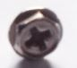
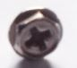
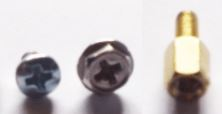

Sekrup dan Baut
Pertanyaan: ( 1 dari 3 )
Berikut ini jenis sekrup yang digunakan untuk memasang kipas CPU, yaitu ....



Pertanyaan: ( 2 dari 3 )
Pada gambar di bawah ini, klik jenis baut yang digunakan untuk dudukan Motherboard!

Pertanyaan: ( 3 dari 3 )
Pada gambar di bawah ini, klik jenis sekrup yang digunakan untuk memasang Casing!